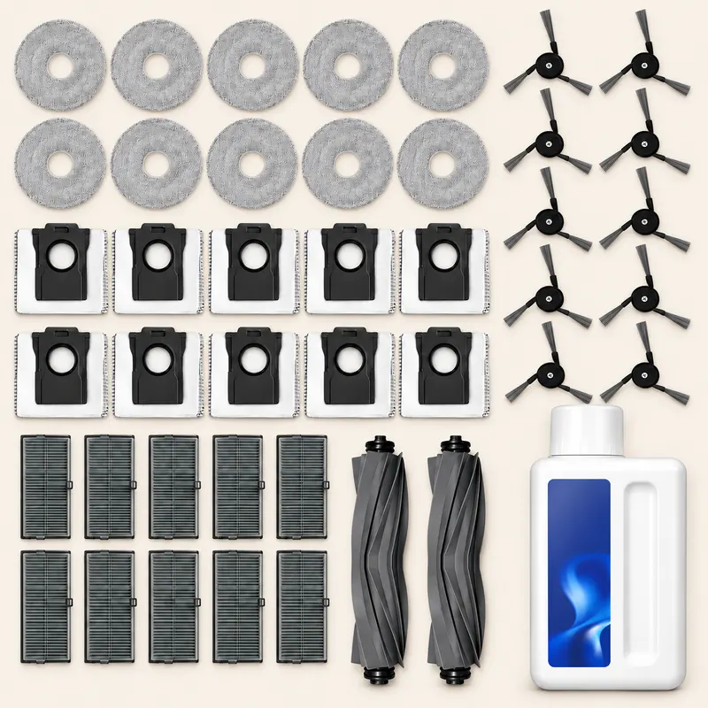
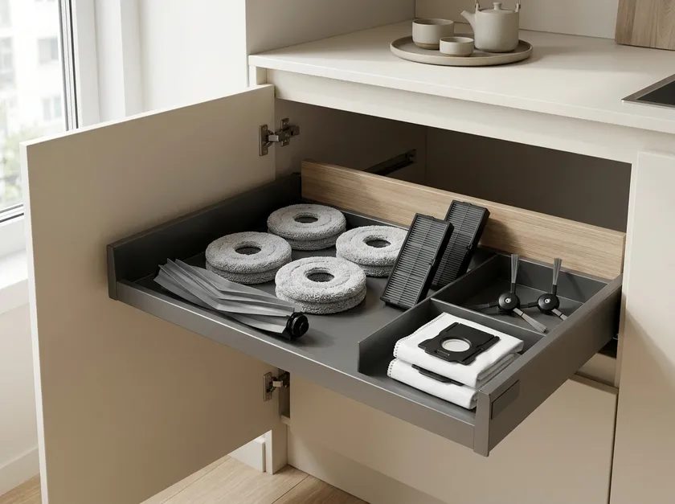

모바 (MOVA)
모바 P70 프로 울트라 물걸레 냄새·브러시 관리｜세제 포함 1년 세트 비교
글·구성: 제이상점 · 기종별 1:1 호환 실물 점검 · 교체 주기 비교표 · 스마트스토어 패키지 안내

핵심 관리 · 선택 체크포인트
- 벽면 모서리와 가구 다리 아래까지 우측 원형 걸레가 바깥으로 뻗어 밀착 청소하는 모바(MOVA) P70 Pro Ultra를 매일 돌리다
- 1:1 전용 규격 체결 포인트와 좌·우 원형 패드 균일 관리: 모바 P70 Pro Ultra는 그레이 실리콘 스파이럴 메인브러시, 3갈래 사이드브러시, 그레이 극세사 원형 물걸레 패드, 블랙 프레임 직사각 워셔블 필터, 블랙 플라스틱 칼라 더스트백으로 구성이 나뉩니다.
- 아래 상품 메인 이미지를 직접 누르시거나 [제이상점 모바 P70 Pro Ultra 세제 포함 3개월·6개월·1년 세트 옵션 바로 확인하기]에서 실물 부품 형상과 기간별 포함 수량을 먼저 대조해 보세요.
- 모바 P70 프로 울트라 핵심 소모품 규격·교체 신호표: 모바 P70 Pro Ultra 관리 시 눈으로 바로 확인할 수 있는 부품별 규격 특징과 교체 타이밍입니다.
- 세제 포함 vs 세제 미포함, 3개월·6개월·1년 옵션 손익 비교: 제이상점 스마트스토어에서는 모바 P70 Pro Ultra 구성을 세제 포함 세트(3개월·6개월·1년)와 세제 미포함 세트(3개월·6개월·1년)로 나누어 선택할 수 있습니다.
실물 부품 디테일 · 관리 구성 이미지



부품 규격 · 점검 기준표
| 부품 구분 | 모바 P70 Pro Ultra 규격 특징 | 체감 교체 신호 · 관리 기준 |
|---|---|---|
| 스파이럴 메인·3암 브러시 | 그레이 실리콘 나선형 롤러 + 3갈래 사이드브러시 | 고무 날개 갈라짐·모서리 쓸어 담기 약해질 때 교체 |
| 원형 물걸레·전용 세제 | 그레이 극세사 원형 패드 2매 + 전용 저발포 클리너 | 세탁 후 쉰내·바닥 물자국 발생 시 교대 장착·세제 보충 |
| 블랙 프레임 필터·더스트백 | 직사각 워셔블 필터 + 블랙 칼라 자동 비움 더스트백 | 필터 24시간 완전 건조·더스트백 80% 차면 밀봉 교체 |
💡 교체 주기가 겹치는 필터·브러시·물걸레·더스트백은 단품 배송비를 여러 번 내기보다 모바 P70 Pro Ultra 기간별 세트(3개월·6개월·1년)로 미리 구비해 두면 물세척 후 24시간 교대 건조까지 끊김 없이 관리할 수 있습니다.
자주 묻는 질문 (FAQ)
Q. 블랙 프레임 먼지통 필터를 물세척한 뒤 바로 끼우면 흡입력에 영향이 있나요?
A. 겉면이 말라 보여도 필터 주름 안쪽에 습기가 남아 있으면 미세먼지가 뭉쳐 공기 흐름을 막고 곰팡이 냄새의 원인이 됩니다. 물세척 후에는 통풍이 잘되는 그늘 건조 랙에서 최소 24시간 이상 속까지 바짝 말린 뒤 장착하시고, 건조 중 청소 공백이 생기지 않도록 예비 필터 1개를 번갈아 사용하시는 편이 안전합니다.
Q. 모바 P70 프로 울트라의 스파이럴 메인·3암 브러시 규격과 관리 기준은 무엇인가요?
A. 그레이 실리콘 나선형 롤러 + 3갈래 사이드브러시 규격을 사용하며, 고무 날개 갈라짐·모서리 쓸어 담기 약해질 때 교체 기준으로 점검·교체하면 청소 효율을 안정적으로 유지할 수 있습니다.
Q. 모바 P70 프로 울트라의 원형 물걸레·전용 세제 규격과 관리 기준은 무엇인가요?
A. 그레이 극세사 원형 패드 2매 + 전용 저발포 클리너 규격을 사용하며, 세탁 후 쉰내·바닥 물자국 발생 시 교대 장착·세제 보충 기준으로 점검·교체하면 청소 효율을 안정적으로 유지할 수 있습니다.
제이상점 1:1 검수 추천 패키지 · 구매 안내
![[호환] 모바 P70 Pro Ultra 소모품 걸레 더스트백 1년세트](../../assets/img/mova-p70-pro-ultra-nodet-product-83f62653.webp)
함께 많이 찾는 보충 구성
대표 구성 참고가 54,000원대 (옵션·쿠폰별 스마트스토어 결제 화면 기준)
1년 세트 (세제 미포함)6개월 세트 (세제 미포함)3개월 세트 (세제 미포함)
☑️ 주문 전 확인해 두면 좋은 제이상점 안심 포인트
· 기종별 1:1 전용 규격 검수: 모델명·연식에 맞는 호환·정품 구성을 검수해 오주문 불안을 줄였습니다.
· 해외직배송 미리 주문 팁: 중국 구매대행·해외직배송 상품이므로 마지막 여분 1개를 꺼내 쓰는 시점에 개인통관고유부호와 함께 여유 있게 주문해 두시면 훨씬 경제적인 비용으로 끊김 없이 교체하실 수 있습니다.
· 기종별 1:1 전용 규격 검수: 모델명·연식에 맞는 호환·정품 구성을 검수해 오주문 불안을 줄였습니다.
· 해외직배송 미리 주문 팁: 중국 구매대행·해외직배송 상품이므로 마지막 여분 1개를 꺼내 쓰는 시점에 개인통관고유부호와 함께 여유 있게 주문해 두시면 훨씬 경제적인 비용으로 끊김 없이 교체하실 수 있습니다.
📖 더 많은 가정 내 사용 스토리와 상세 후기가 궁금하시다면
📱 네이버 블로그 모바일 원문 보기 ↗